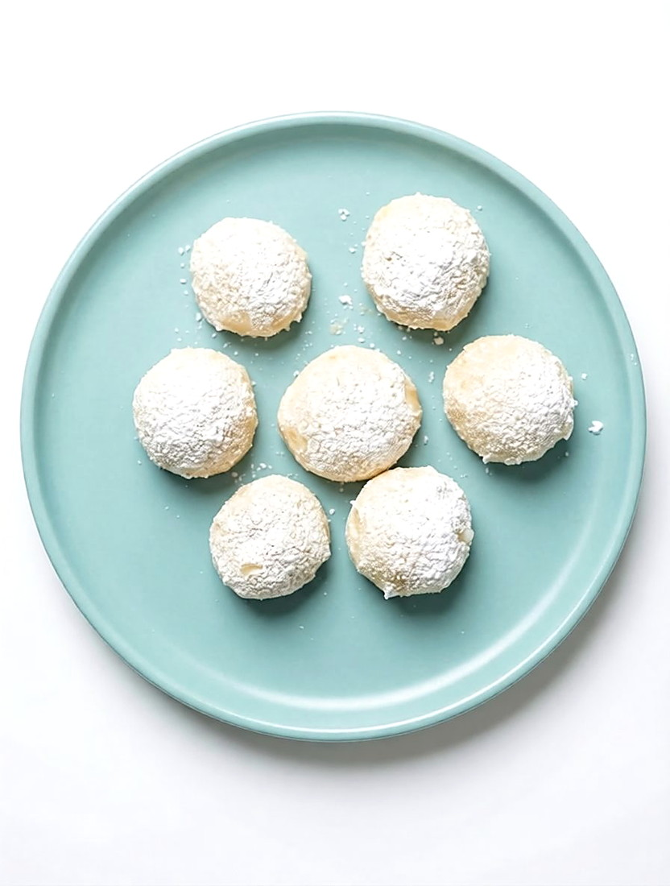
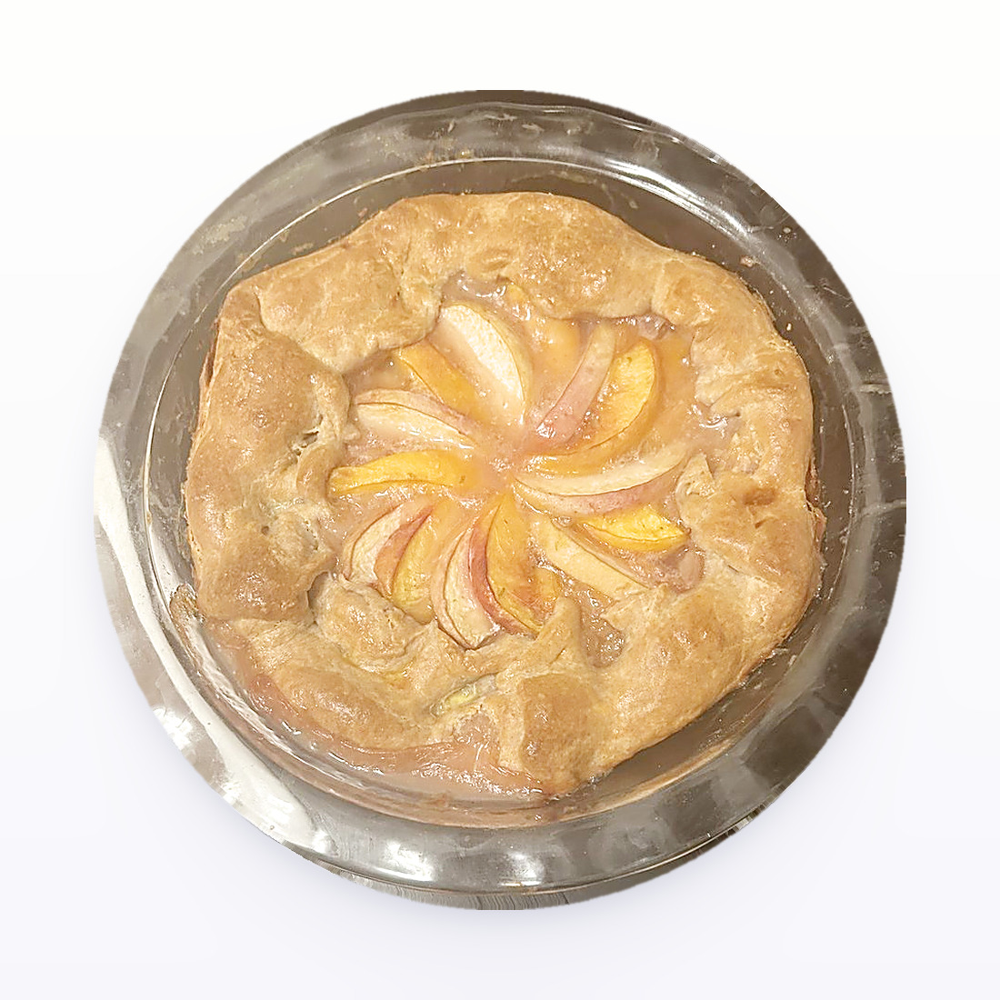
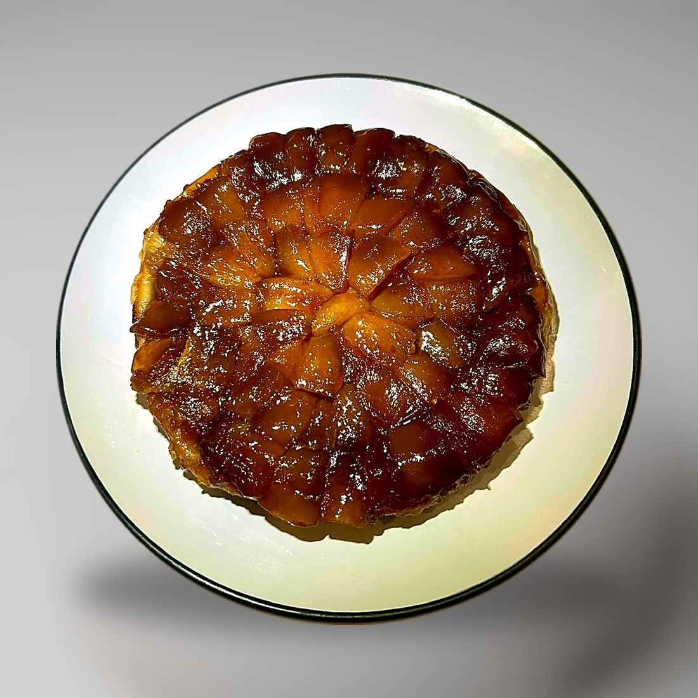
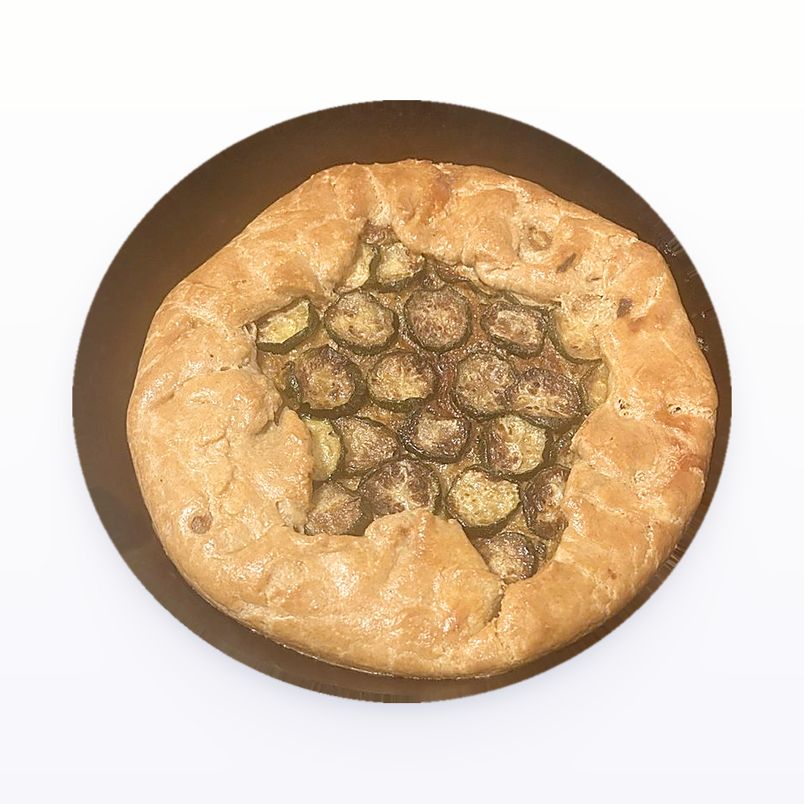
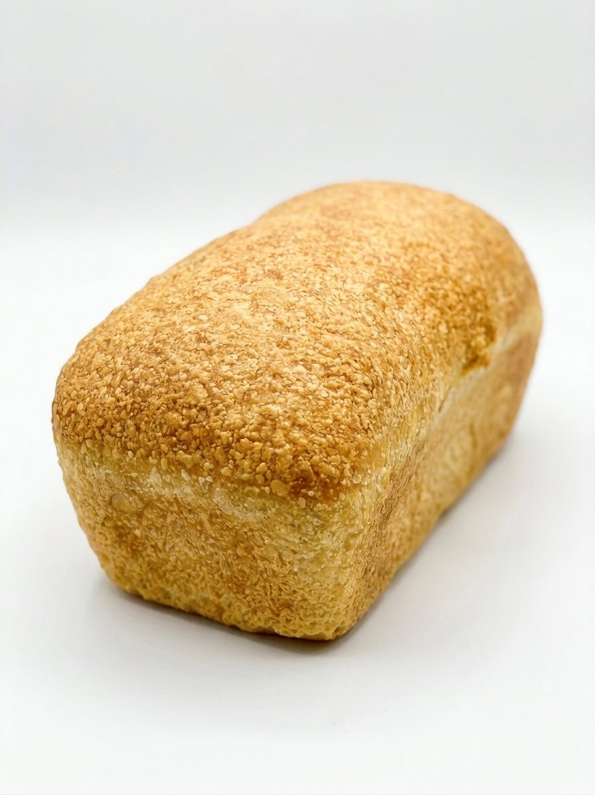
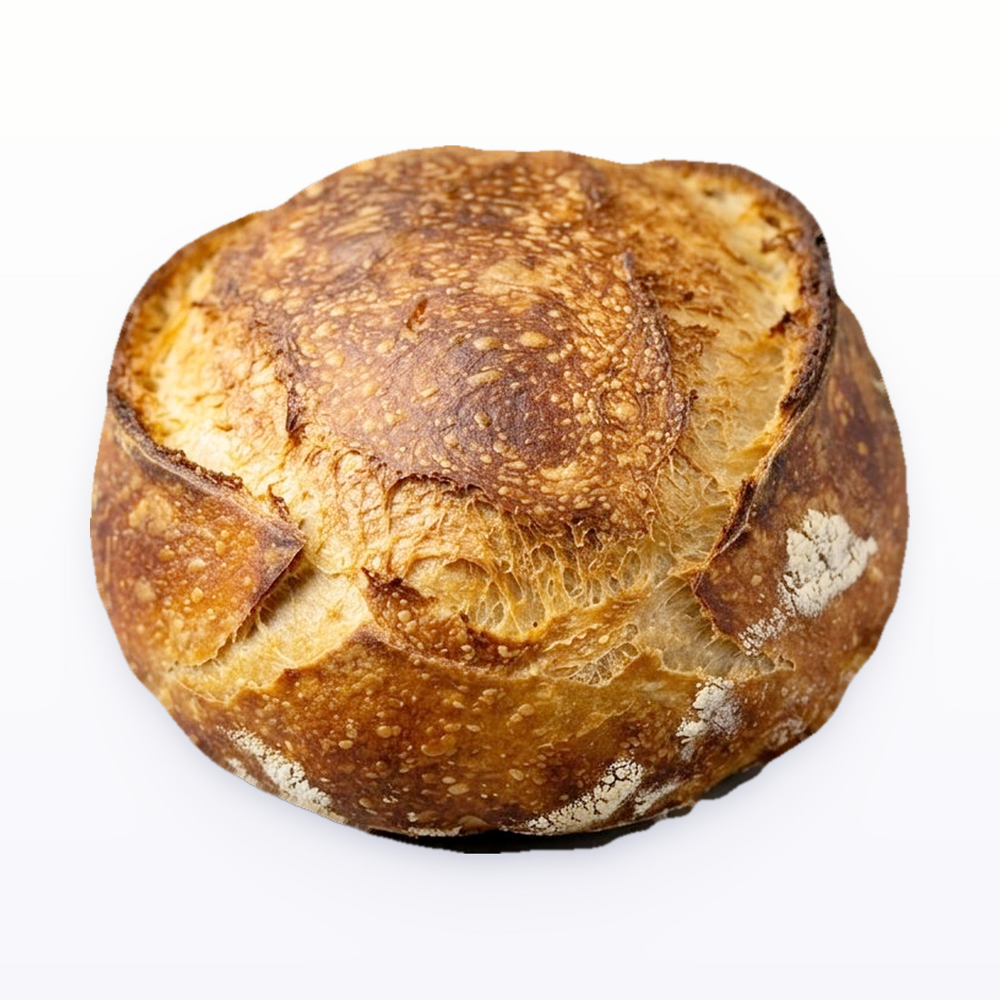
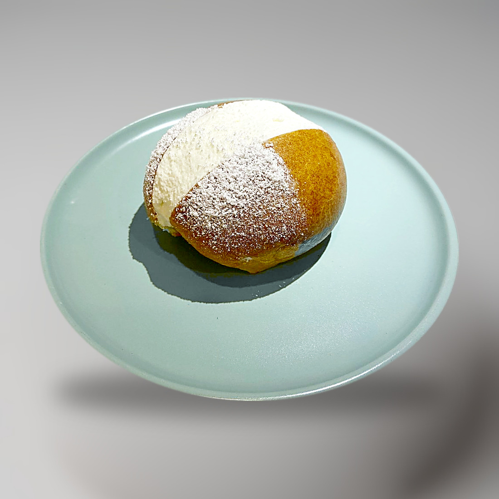
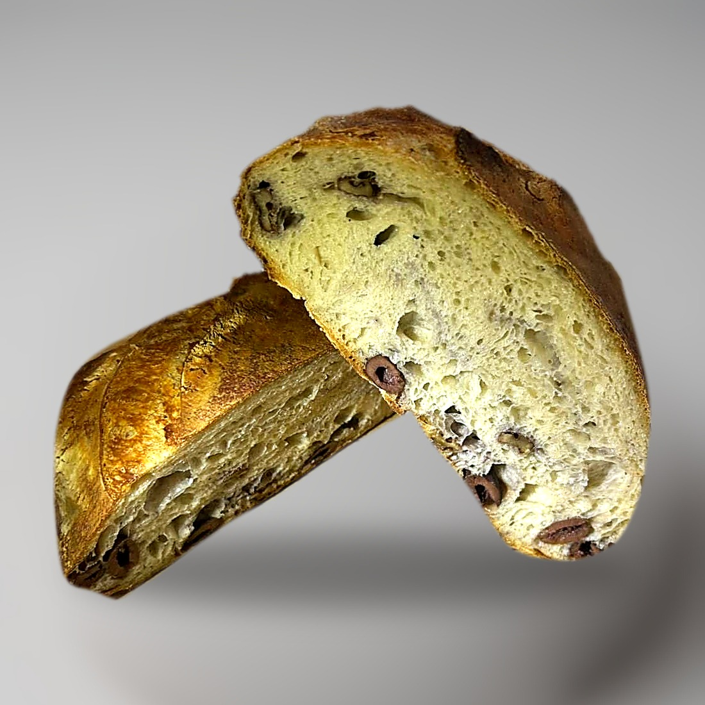
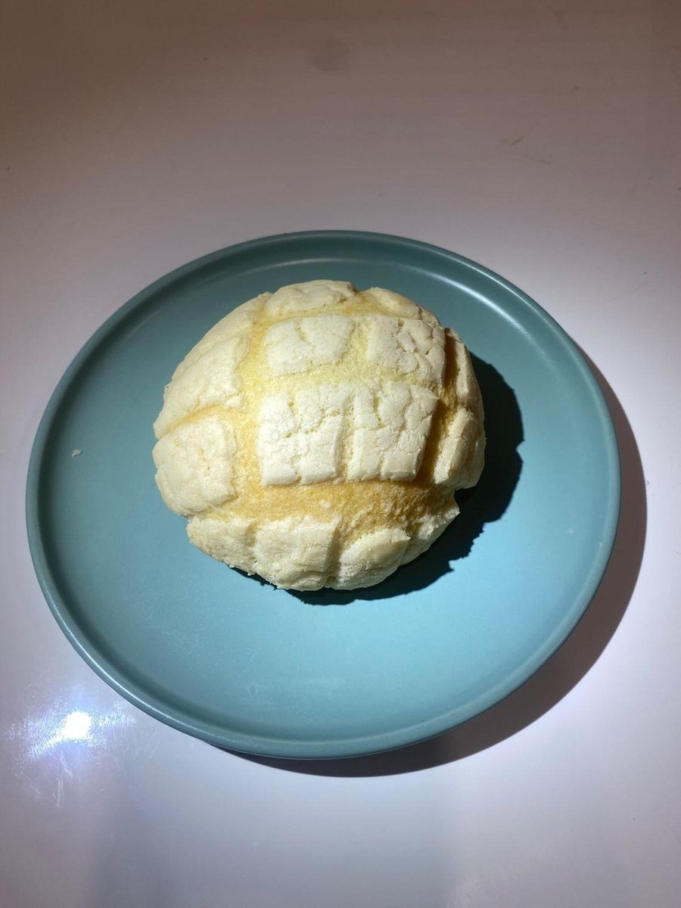
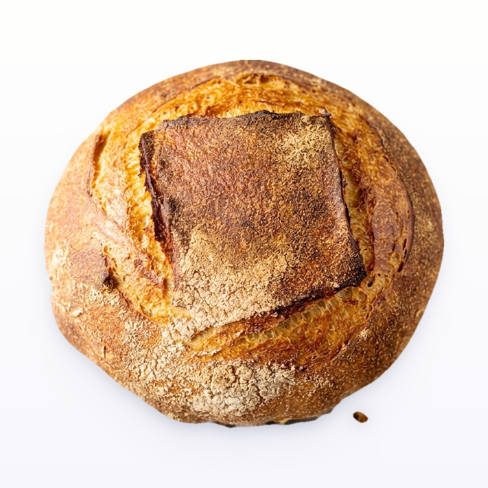

Baking
49 recipes, 35 with a method, in 7 groups.
Chocolate chip cookies10 recipes, 10 with a method

Broma Bakery Chocolate Chip
14 cookies
4.5/5 overall · 9 ingredients
Copycat Levain Bakery
8 cookies
4.5/5 overall · 11 ingredients
Brown Butter Chocolate Chip
26-28 cookies
4/5 overall · 13 ingredients
Dominique Ansel Chocolate Chunk
14 cookies
3.5/5 overall · 9 ingredients

Professional Chocolate Chip
18 cookies
3/5 overall · 11 ingredients
48-Hour Chocolate Chip
18 cookies
15 ingredients
Basic Chocolate Chip
12 cookies
10 ingredients
Maman's Nutty Chocolate Chip
14 cookies
9 ingredients
NYC Chocolate Chip
12 large cookies
11 ingredients
Salted Sesame Chocolate Chip
12 cookies
12 ingredients
Butter cookies13 recipes, 13 with a method

Milk Powder Butter Cookies
40 cookies
4.75/5 overall · 7 ingredients
Simple Pipeable Butter Cookies
26 cookies
4.25/5 overall · 6 ingredients
Old-Fashioned Butter Cookies
50 cookies
4/5 overall · 7 ingredients
Jenny Bakery Copycat Butter Cookies
15 cookies
3.75/5 overall · 4 ingredients
Danish Style Butter Cookies
34 cookies
3.5/5 overall · 6 ingredients
101 Cookbooks Shortbread
30 cookies
5 ingredients
Brazilian Butter Cookies
100 cookies
6 ingredients
European Style Butter Cookies
60 cookies
7 ingredients
I Am Baker Butter Cookies
16 cookies
7 ingredients
Ina Garten's Shortbread
24 cookies
5 ingredients

Mexican Wedding Cookies
48 cookies
7 ingredients
Pan Shortbread
16 pieces
5 ingredients
Scottish Shortbread
12-16 pieces
3 ingredients
Other cookies1 recipe, 1 with a method

Baklava1 recipe, 0 with a method
Tarts14 recipes, 8 with a method
Doughs
Cheesecake Shortbread Crust
base for 1 x 20 cm cake
4 ingredients
Maria Cookie Base
base for 1 x 20 cm cake
2 ingredients
Pate Brisee
1 x 23 cm tart base, serves 6
5 ingredients
Pate Sablee with Almond Flour
8 mini tartlets at 8 cm, or 1 large 23 cm tart
6 ingredients
Pate Sablee, Crumbling Method
1 x 23 cm tart base, serves 6
5 ingredients
Shortbread Tart Crust
1 x 20cm base, 4-5mm thick
4 ingredients
Fillings
Dishes
Alex Cordobes Cheesecake
1 x 20 cm cake, 8 servings
Caramel Walnut Tart
6 ingredients

Chocolate Tart
6 ingredients
Lemon Tart
5 ingredients

Peach Galette

Tarte Tatin

Zucchini Galette
Bread9 recipes, 3 with a method

White Sourdough Bread
1 loaf · about 24 h
6 ingredients

High Hydration Sourdough
1 loaf
4 ingredients
No-Knead Focaccia
1 rimmed sheet pan
6 ingredients

Brioche Burger Buns

Maritozzo

Olive Loaf

Sourdough Baguette

Sourdough Concha

Whole Grain Sourdough
1 loaf
5 ingredients